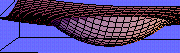

Nonconvex variational problems
-
Many applications, like optimal design, theory of composites, phase transitions in solids, etc.
requires the soliution of variational problems with non-convex (non-quasiconvex) integrands.
These problems usually do not possess a classical (smooth) solution,
but weird minimizing sequences which are characterized
by infinitely often oscillation (or by fine scale alternation)
of solutions.
- lower bounds for the solutions (Translation method.)
- a detailed structure of minimizing sequences,
- special necessary conditions technique.
To deal with those problems, one needs to find their relaxed reformulation. The relaxed problem has the same cost as the original one. It also possess a smooth solution which is an average upon a small volume of the highly oscillated solution of the original problem.
It is known several techniques to handle these problems. They include
For multidimensional variational problems, these areas are mainly open.
 Back to the research page
Back to the research page